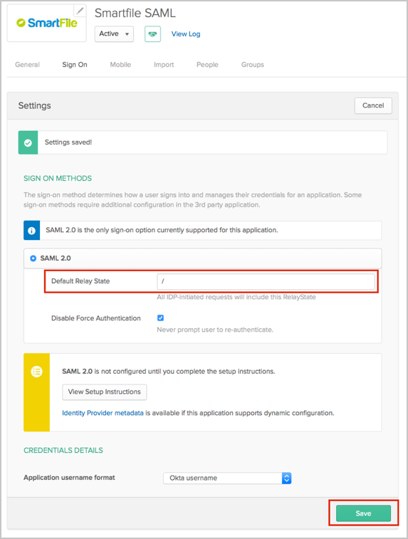

Contact the SmartFile Support team and request that they enable SAML 2.0 for your account.
Copy and save the following as metadata.xml and include this file with your request.
Sign in to Okta Admin app to have this variable generated for you.
SmartFile will notify you when SAML is enabled.
In Okta, select the Sign On for the Smartfile app, then click Edit.
In the Default Relay State field, enter “ / ”.
Click Save.

Done!
Notes:
SP-initiated flows and IdP-initiated flows are supported.
Just In Time (JIT) provisioning is not supported.